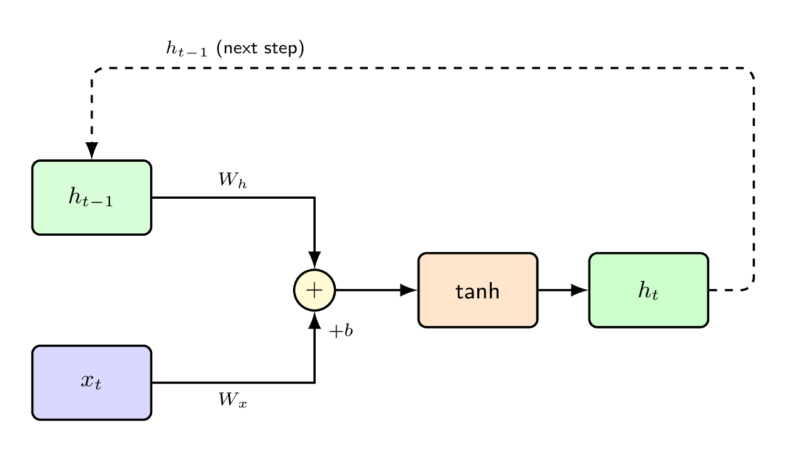
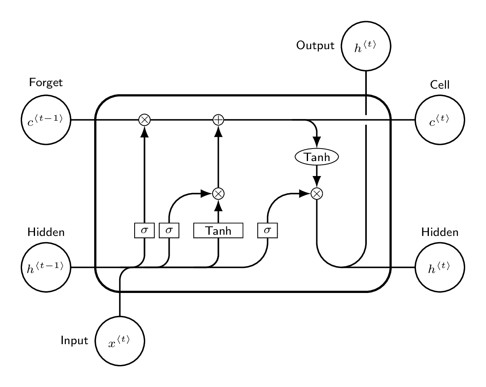
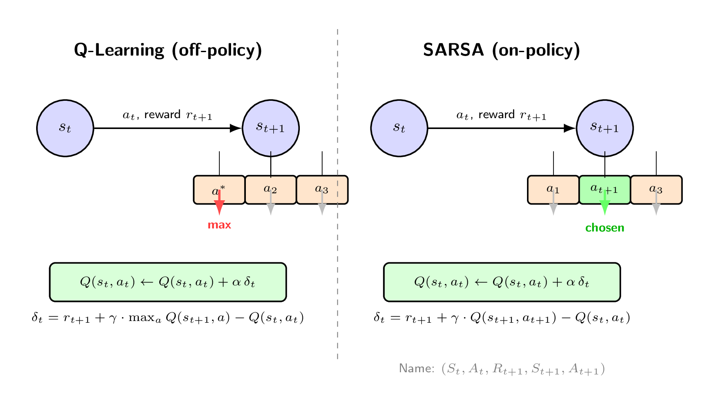
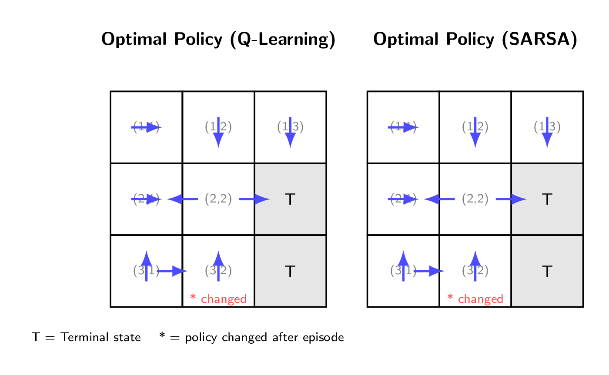

References: Goodfellow et al. (2016) · Hochreiter & Schmidhuber (1997) · Bahdanau et al. (2015) · Vaswani et al. (2017) · Sutton & Barto (2018) · Lecture Decks 5–9
01 · CNN Backpropagation
Backpropagation on CNN
Extending gradient descent to update kernels and weights in a convolutional architecture. Gradients propagate through pooling and convolutional layers via the chain rule.
1.1 Forward Pass Recap
Convolution Layer
\(net_c = X * K\). Linear operation between input \(X\) and kernel \(K\).
A class of neural networks for sequential data where the order of inputs is crucial. RNNs maintain a hidden state that carries information across timesteps.
2.1 Motivation: IID Breakdown & Sequential Data
Standard supervised learning assumes data samples are Independent and Identically Distributed (i.i.d.). Sequential data violates this — in language, time-series, or sensor readings each observation depends on previous ones. A vanilla FFNN has no mechanism to share context across positions, and requires fixed-size input.
RNN solution: A recurrent connection feeds the hidden state \(h^{(t-1)}\) back into the computation at step \(t\), encoding the sequence history into a running "memory" vector.
2.2 Sequence Modeling Types
One-to-One
Standard FFNN. Single input → single output. No sequence.
Many-to-One
Sequence input → single output. Sentiment analysis, time-series forecasting.
One-to-Many
Single input → sequence output. Image captioning.
Many-to-Many (Sync)
Input & output same length. POS tagging, NER, frame labeling.
Many-to-Many (Delayed)
Encoder-Decoder: output starts after full input. Machine translation.
\(W_{xh}\): input→hidden · \(W_{hh}\): hidden→hidden (recurrent) · \(W_{ho}\): hidden→output ·
\(f_h\): typically \(\tanh\) · \(f_y\): softmax (classification) or linear (regression)
RNN — Unrolled Through Time
RNN Cell — Internal Structure (TikZ)

2.4 Multi-Layer RNN & Parameter Sharing
RNN cells can be stacked: the hidden state of layer \(\ell\) becomes the input of layer \(\ell+1\). In Keras, intermediate layers require return_sequences=True. The defining property is parameter sharing — the same \(W_{xh}, W_{hh}, W_{ho}\) are used at every timestep, enabling variable-length inputs and efficient parameter use.
03 · Long Short-Term Memory
LSTM & Vanishing Gradient
LSTM was designed to solve the vanishing gradient problem in standard RNNs by maintaining a separate cell state — a gradient highway regulated by learnable gates.
3.1 Vanishing Gradient Problem
During BPTT, gradients are multiplied repeatedly by \(W_{hh}\) and \(\tanh'(\cdot) < 1\). For long sequences this product approaches zero exponentially — the network cannot learn long-range dependencies. The cell state in LSTM keeps this product near 1 when the forget gate is open.
\(\odot\) = element-wise multiplication. \(f_t \approx 1\) keeps old cell state; \(f_t \approx 0\) forgets it.
Forget Gate \(f_t\)
\(\sigma\) output 0 = forget old memory; 1 = keep it entirely.
Input Gate \(i_t\)
Controls how much of the candidate \(\tilde{C}_t\) is written to cell state.
Candidate \(\tilde{C}_t\)
Proposed new values for the cell state, via \(\tanh\) of concatenated input.
Output Gate \(o_t\)
Filters what fraction of \(C^{(t)}\) is exposed as hidden state \(h^{(t)}\).
LSTM Cell — Gate Structure & Cell State Highway (TikZ)

3.3 Parameter Counting
Each gate has weight matrix of shape \((m+n) \times n\) plus bias \(n\), where \(m\) = input dim and \(n\) = LSTM units. With 4 gates and an output Dense layer:
\(m\) = input dim · \(n\) = LSTM units · \(k\) = output classes · Factor 4 = four gates (f, i, c̃, o)
04 · Attention & Encoder-Decoder
Attention Mechanism
Attention was introduced to overcome the information bottleneck of a fixed-length context vector in vanilla Encoder-Decoder networks. The decoder now dynamically focuses on different encoder positions at each decoding step.
4.1 Encoder-Decoder Without Attention
The vanilla seq2seq model compresses the entire input sequence into a single fixed vector \(c = h^{(T_x)}\). The decoder then generates output from only this vector. For long sequences, this bottleneck causes severe information loss.
Bottleneck Problem: For a 50-word sentence, all information must fit into one fixed-size vector. Empirically, translation quality degrades sharply as input length grows.
4.2 Bahdanau (Additive) Attention
At each decoder step \(t\), a different context vector \(c_t\) is computed as a weighted sum over all encoder hidden states \(\{h_j\}\):
\(s_{t-1}\): previous decoder hidden state · \(h_j\): encoder hidden state at position \(j\) ·
\(W_a, U_a, v_a\): learned alignment params ·
Score computed before decoder step \(t\) (uses \(s_{t-1}\))
Alignment matrix \(\alpha_{tj}\): Visualizing all \(\alpha_{tj}\) values reveals which source positions each output token attends to — giving interpretable word alignments in translation tasks.
4.3 Luong (Multiplicative) Attention
Luong et al. compute the alignment score after the decoder step, using the current hidden state \(h_t\):
The Transformer (Vaswani et al. 2017) replaces recurrent cells with self-attention layers entirely, enabling fully parallel computation and direct long-range dependency modeling.
5.1 Q / K / V Self-Attention
For input sequence \(X = [x_1,\ldots,x_N]\), three linear projections create Query, Key, and Value vectors for each position:
Projections
\[ q_n = \beta_q + \Omega_q\, x_n \quad\text{(query — "what am I looking for?")} \]
\[ k_m = \beta_k + \Omega_k\, x_m \quad\text{(key — "what do I have?")} \]
\[ v_m = \beta_v + \Omega_v\, x_m \quad\text{(value — "what I contribute")} \]
\(D_q\) = query dimension · Division by \(\sqrt{D_q}\) prevents dot-products from growing large and saturating the softmax ·
Each position receives a weighted sum of all value vectors.
5.2 Transformer vs RNN Encoder-Decoder
RNN Processing
Sequential: \(h^{(t)}\) depends on \(h^{(t-1)}\). Distance between positions = \(T\) steps. Cannot parallelize across time.
Transformer Processing
All positions processed in parallel. Direct \(O(1)\) path between any two positions via self-attention.
Positional Encoding
Self-attention is order-invariant, so position is injected via sinusoidal or learned encodings added to the input embeddings.
Multi-Head Attention
Run \(H\) independent attention heads; concatenate outputs. Jointly attends to different subspace relationships across positions.
Why this matters: In an RNN, information from step 1 must survive \(T{-}1\) transformations to reach step \(T\). In a Transformer, every pair of positions attends to each other directly in a single layer — drastically reducing the path length for long-range information.
RL is a paradigm where an agent learns a policy through interaction with an environment, using reward signals as the only feedback. No labeled examples — the agent must discover good behavior via trial and error.
7.1 RL vs Supervised Learning
Supervised Learning
Learns from labeled pairs \((x, y)\). Correct answer given at each step. No sequential decision-making.
Reinforcement Learning
No labels. Receives reward \(R_t\) which may be delayed. Actions influence future states. Goal: maximize cumulative reward.
Reward Hypothesis
All goals can be described as maximizing the expected cumulative reward. Central hypothesis of RL.
Time Matters
Unlike i.i.d. supervised learning, the current action affects future states and rewards — sequential decision-making.
7.2 Agent-Environment Loop
At each timestep \(t\), the agent observes \(S_t\), selects action \(A_t\), and the environment returns reward \(R_{t+1}\) and next state \(S_{t+1}\):
\(\gamma = 0\): only immediate reward · \(\gamma \to 1\): all future rewards equally valued · Ensures sum converges; reflects that near-term rewards are more certain.
\(v(s)\): how good state \(s\) is under policy \(\pi\). \(q(s,a)\): how good taking action \(a\) from state \(s\) is.
Policy \(\pi\)
\[ A = \pi(S) \quad\text{(deterministic)} \]
\[ \pi(A \mid S) = P(A_t = a \mid S_t = s) \quad\text{(stochastic)} \]
Policy
Agent's behavior function — maps states to actions or distributions over actions.
Value Function
Estimates expected future reward from a state or state-action pair.
Model (optional)
Agent's internal environment model — predicts \(S_{t+1}\) and \(R_{t+1}\) given \(S_t, A_t\).
Model-Free vs Model-Based
Free: learns from raw experience (Q-learning). Based: builds environment model to plan ahead.
7.5 Q-Learning & SARSA
Both algorithms learn an action-value function \(Q(s,a)\) from experience. The only difference is which next-step value is used as the bootstrap target:
Off-policy: bootstraps from the greedy best action in \(s_{t+1}\), regardless of what action was actually taken. Learns the optimal policy even while exploring.
On-policy: bootstraps from the value of the next action actually chosen by the current policy. Converges to the optimal policy for the current exploration strategy.
Name origin of SARSA: The update uses the tuple \((S_t,\, A_t,\, R_{t+1},\, S_{t+1},\, A_{t+1})\) — five elements, hence "SARSA".
Q-Learning
Off-policy. Uses \(\max_a Q(s',a)\). Optimistic — assumes best future action. Converges to \(Q^*\) regardless of exploration policy.
SARSA
On-policy. Uses \(Q(s', a')\) where \(a'\) is the action actually taken. Conservative — penalizes risky explorations.
When they differ
When the next action \(a'\) is not the greedy best action. Q-Learning is optimistic about \(s_{t+1}\); SARSA is realistic.
When they agree
When \(a_{t+1}\) happens to be \(\arg\max_a Q(s_{t+1}, a)\), or at terminal states where \(Q = 0\).
Q-Learning vs SARSA — Bootstrap Target Comparison

7.6 Optimal Policy & Grid World
After training, the optimal policy \(\pi^*\) selects the action with the highest \(Q(s,a)\) value in each state. A single episode of Q-Learning updates only the states visited — the rest remain unchanged.
Episode example: path \((2,1) \to (2,2) \to (3,2) \to (3,3)\) with \(\alpha=0.5,\, \gamma=0.7\). Only \(Q((2,1),R)\), \(Q((2,2),D)\), \(Q((3,2),R)\) are updated. The policy at state \((3,2)\) changes from "↑ or →" to "↑ only" because \(Q((3,2), R)\) falls sharply from reward \(-10\).
Grid World — Optimal Policy Before & After One Episode

Glossary
Key Terms
Definitions for all major Final Term exam topics.
IID Independent & Identically Distributed — standard ML assumption violated by sequential data.
Parameter Sharing Same weight matrices \(W_{xh}, W_{hh}, W_{ho}\) used at every RNN timestep.
Vanishing Gradient Gradients shrink exponentially during BPTT; solved by LSTM cell state highway.
Cell State LSTM long-term memory highway — regulated by forget / input gates.
Context Vector \(c_t = \sum_j \alpha_{tj} h_j\) — weighted sum of encoder states used by the decoder.
Alignment Score \(e_{tj}\) measures relevance of encoder position \(j\) to decoder step \(t\).
Self-Attention Computes pairwise relationships between all token pairs in the same sequence in parallel.
Q / K / V Query, Key, Value — the three learned linear projections in Transformer self-attention.
Scaled Dot-Product \(\text{Sa}[X] = V \cdot \text{Softmax}[K^\top Q / \sqrt{D_q}]\)